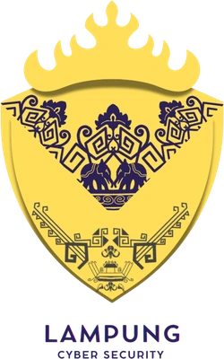

Didukung oleh
Diskominfotik Provinsi Lampung


Bentuk timmu dan uji kemampuan keamanan siber dalam kompetisi Capture the Flag daring dengan tantangan yang terinspirasi dari kasus nyata.
Didukung oleh Diskominfotik Provinsi Lampung
Jejama CTF adalah kompetisi Capture The Flag (CTF) daring yang diselenggarakan oleh komunitas Lampung Cyber Security untuk mempertemukan pegiat keamanan siber, pelajar, mahasiswa, dan calon profesional keamanan dari seluruh Indonesia.
Jejama CTF menjadi wadah belajar, berkolaborasi, dan berinovasi. Peserta akan menjelajahi tantangan keamanan siber yang terinspirasi dari kasus nyata dalam berbagai kategori, mulai dari eksploitasi web hingga forensik digital.
Dengan semangat kebersamaan, Jejama CTF bertujuan memperkuat komunitas keamanan siber Indonesia, menginspirasi generasi peretas etis berikutnya, serta membuka kesempatan untuk membangun relasi, berkompetisi, dan berkembang.
Mulai pelayaranmu, jelajahi tantangan baru, dan buktikan kemampuanmu di dunia keamanan siber.
Jelajahi enam kategori tantangan keamanan siber.
Uang Pembinaan & Penghargaan

Didukung oleh
Penyelenggara

Dukung perkembangan komunitas keamanan siber di Lampung.
Informasi kerja sama akan segera diumumkan.


Buktikan kemampuanmu bersama tim.